Настройка и применение. Часть 2
Вторая часть глубоко субъективного гайда по VSCode.
Это вторая часть статьи по VSCode. Перейти к 1-ой части можно по этой ссылке.
В рамках второй части этой статьи будут рассмотрены аспекты работы с редактором, которые не были затронуты в первой части, а именно:
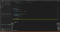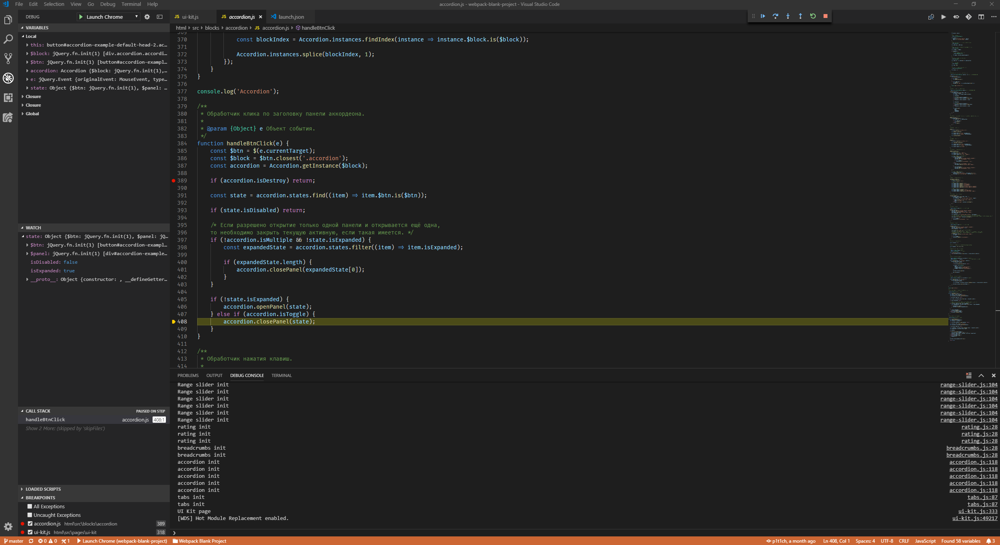
Процесс отладки клиентской части с расширением Debugger for Chrome
Из коробки VSCode позволяет отлаживать Node.js. Как фронтенд-разработчика, меня всё же интересует отладка клиентских скриптов. Обычно это делается указанием точек останова через debugger и обращение к инструментам разработчика в Chrome. Однако VSCode позволяет управлять процессом отладки клиентского кода прямо из редактора по аналогии с отладкой Ноды. Реализуется это через расширение, которое мы сейчас рассмотрим.
Debugger for Chrome
Подход к отладке через данное расширение сводит к минимуму переключение контекста, что способствует общему повышению производительности. Более того подобный подход стимулирует людей, привыкших к отладке через вывод логов в консоль, наконец начать использовать полноценные средства отладки. Для тех же, кто ставит debugger внутри кода или брейкпоинты в Chrome Devtools, предоставляет более комфортные условия для работы. Раньше в простых случаях хотелось просто написать console.log(), теперь же такого желания нет, т.к. щёлкнуть по полю и нажать F5 будет даже быстрее.
Чтобы отладка работала, на проекте должны быть определены sourcemaps и корректно работать, т.к. отладчик использует их для навигации по исходному коду. На старых рабочих проектах с gulp-file-include, например, заставить работать отладку мне не удалось. На новом проекте Webpack с ES-модулями и прописанными соурсмапами, всё работает идеально. Если это условие соблюдено, то единственное, что нужно здесь сделать — это прописать корректный конфиг отладки. Сделав это один раз под проект, к нему уже не придётся возвращаться.
Конфигурации запуска бывают 2-х видов: launch и attach. Разница в том, что launch запускает Chrome, а attach привязывается к уже запущенному процессу. В целом, при работе с Webpack attach звучит лучше, однако для этого нужно изначально открывать браузер с флагом --remote-debugging-port, что возможно только через консоль, но это максимально неудобно. Так что я остановился на варианте с launch — при запуске дебага открывается отдельное окно для отладки — небольшой tradeoff, т.к. хотелось бы всё делать в одном окне, но всё же удобнее, чем запускать Chrome из консоли.
Конфигурации можно задавать как на уровне проектов (.vscode > launch.json), так и глобально в настройках. Практика показывает, что удобнее задавать их на уровне отдельных проектов, т.к. в каждом проекте могут быть свои особенности. Допустим, где-то удобнее поменять корневую директорию, где-то прописать специфические файлы в blacklist и т.д. Хотя ничто не мешает иметь нейтральный глобальный конфиг, который будет переопределяться по необходимости.
Для отладки предоставлена отдельная вкладка Debug панели управления. Из неё же можно перейти к файлу конфигурации при необходимости. При первом запуске отладки (F5) этот конфиг создастся сам и откроется на редактирование — нужно только выбрать Chrome в появившемся меню (этот вариант как раз и добавляет плагин). Конфигурация очень простая: в поле url нужно указать порт, на котором у вас запускается проект, а в поле webRoot адрес рабочей директории. В моём случае:
“url”: “http://localhost:3000",
“webRoot”: “${workspaceFolder}/html”,
Переменная workspaceFolder — это абсолютный путь до корневой директории вашего проекта (та, где лежит папка .vscode).
Также расширение поддерживает blackboxing, как и оригинальные Chrome Devtools, т.е. исключение ненужных файлов/директорий, чтобы при отладке перемещаться только по своему коду, а не проваливаться постоянно в скрипты внешних библиотек. Делается это через указание массива skipFiles в настройках. Здесь нужно поиграться, т.к. путь до файлов зависит от того, как на вашем проекте настроены соурсмапы.
Ну и всё. Теперь мы можем ставить брейкпоинты кликом на полях, ходить по коду внутри приятного глазу редактора, видеть встроенный консольный лог, иметь доступ к переменным, отслеживать нужные нам через watch и с пониманием дела любоваться изменением call stack.
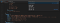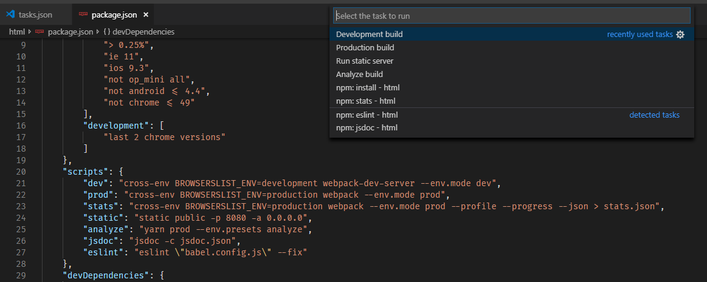
Список определённых на уровне package.json yarn скриптов и их автоматическое определение на уровне VSCode
VSCode поддерживает исполнение тасков через палитру команд. В качестве тасков могут идти, например, npm скрипты или gulp таски. VSCode автоматически определяет такие команды и предоставляет их список при выполнении команды Tasks: Run Task. После выбора таска из списка в первый раз информация по нему пропишется в tasks.json в вашей директории .vscode, в следующий раз же будет запускаться сразу. Запущенному таску выделяется отдельный терминал, который открывается после запуска, а список запущенных тасков отображается в нижнем баре. По нажатию на кнопку выведется список тасков, выбор таска перекинет на соответствующий терминал. Здесь можно прекратить выполнение нажатием Ctrl + C.
Лично я пользуюсь yarn скриптами, что по сути те же npm скрипты — VSCode их так и определяет. В package.json в поле script у меня прописан набор тасков, после чего в консоли я просто пишу, например, yarn dev и выполняется development сборка (через npm писалось бы npm run dev).
Используя механизм тасков из VSCode я могу сделать то же самое через палитру команд. По сути это просто модная альтернатива: открыть палитру команд, далее Run Task и выбрать npm:dev не быстрее, чем открыть консоль и прописать yarn dev. К тому же терминал всё равно открывается после выполнения команды через механизм тасков, так что места мы здесь не выигрываем. Другое дело, если бы терминал не открывался, а команда исполнялась в фоне — тогда бы экономилась одна консоль под watch, и не нужно было бы делить терминал надвое.
Однако таски имеют одно преимущество над обычным запуском (помимо пафосности) — их можно привязывать к горячим клавишам. Так можно определить основной build и test таски через соответствующие команды и запускать build-таск через Ctrl + Shift + B, а для теста придётся привязать свою комбинацию, по умолчанию её нет. Но что если у меня не только build и test? Как видно из списка скриптов на скриншоте, я, как минимум, широко использую команду для development-сборки, команду для production-сборки, запуск статического сервера для тестирования production-сборки и запуск анализатора. Не проблема, т.к. VSCode позволяет привязать к каждому таску свою комбинацию.
Чтобы этого добиться, нужно в tasks.json дать имена таскам, которым мы собираемся присвоить шорткаты. Делается это через поле label. Например, таск yarn dev в tasks.json будет выглядеть следующим образом (group здесь добавлен, т.к. этот таск сделан основным build таском):
{
“label”: “Development build”,
“type”: “npm”,
“script”: “dev”,
“path”: “html/”,
“group”: {
“kind”: “build”,
“isDefault”: true
}
}
Далее переходим в keybindings.json (Preferences: Open Keyboard Shortcuts File) и добавляем в список пользовательских команд новую по типу:
{
“key”: “ctrl+k f1”,
“command”: “workbench.action.tasks.runTask”,
“args”: “Development build”
}
Здесь значение args совпадает со значением label вашего таска. В качестве комбинаций я решил выбрать Ctrl + K с последующей F-клавишей. Так эти 4 основных таска распределены у меня по клавишам F1-F4. Только нужно проследить за тем, что клавиша после Ctrl + K сама по себе не является шорткатом. По этой причине пришлось отвязать F1.
После такой настройки исполнение тасков действительно происходит быстрее и можно оставить себе единственный рабочий терминал. Если вы тоже у себя в работе используете что-то подобное, то рекомендую, как минимум, попробовать такой подход.
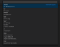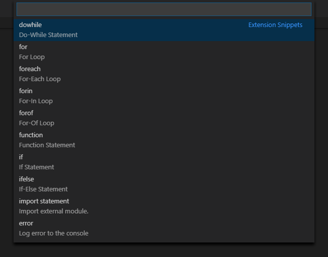
Список встроенных сниппетов для js
Немного о сниппетах, о том, как с ними работать в VSCode. Для тех, кто никогда не пользовался сниппетами, пару слов пояснения. Сниппеты — это фрагменты кода, спрятанные за кодовым словом. При вводе этого слова и нажатии Tab или Enter ассоциированный с ним код раскрывается, и кроме того предоставляется набор позиций для курсора, по которым мы можем пройти по Tab, пока не окажемся на конечной позиции — так называемые табстопы (tab stops). Система сниппетов есть в любом уважающем себя редакторе, есть она и в VSCode, так что остаётся понять как ей здесь пользоваться.
При написании кода сниппеты будут предлагаться в автосаджесте. Как пример, for: начинаем вводить “for” — видим сниппет в списке, нажимаем Tab или Enter, после чего код разворачивается и располагает курсоры на всех вхождениях индексов, чтобы мы задали им имя (при этом там уже есть предустановленное значение — плейсхолдер). Tab и мы на вхождениях имени массива, Tab и мы на имени переменной элемента внутри цикла, Tab и мы внутри цикла продолжаем писать код. Ни одного переключения на мышь за весь процесс, никаких повторений засчёт множественного выделения, никаких повторений статичных частей конструкций из раза в раз.
Сниппеты делятся на глобальные и локальные для отдельных типов файлов. Из коробки VSCode предоставляет небольшой перечень сниппетов для js, покрывающий основные типовые команды. Чтобы наглядно посмотреть список доступных сниппетов, введите в палитре команд Insert Snippet. Также если вы собираетесь активно ими пользоваться, будет полезно поставить эту команду на горячую клавишу. Обращаю внимание, что это локальные сниппеты только для js, так что вы не увидите их при написании разметки или стилей.
Из встроенного набора могут быть особенно полезны log для вывода лога, сниппеты для циклов (for, foreach, forin), switch, settimeout. Не сказать, что я пользуюсь forin, но обращаю на него здесь внимание, из-за интересного момента, что он сразу идёт с обёрткой в hasOwnProperty. switch я использую редко, поэтому раньше всегда проверял как он пишется — теперь никуда лезть не нужно.
По умолчанию в списке автосаджеста сниппеты идут по алфавиту вместе с остальными конструкциями. Мне кажется более разумным выносить их отдельно в самый верх списка — так о них не будешь забывать, да и визуально список они не будут засорять:
“editor.snippetSuggestions”: “top”,
Хотя это дискуссионный вопрос. Как другой подход, вообще убрать их из автосаджеста, смотрите сами.
Набор сниппетов можно расширять добавлением готовых пакетов сниппетов на маркетплейсе и прописыванием своих. На данный момент я не пользуюсь готовыми решениями, но может вы найдёте для себя подходящие. Для ES6 например очень популярен этот пакет. Также популярны паки для основных фреймворков. Когда наконец переберусь на React, опробую их в деле 👍
Написать свой сниппет несложно и делается это вызовом команды Preferences: Configure User Snippets, которая также доступна через кнопку настроек в нижнем левом углу редактора (иконка шестерёнки). После вызова выбираете язык, для которого предназначается этот сниппет — откроется JSON-файл, куда вы прописываете свои сниппеты. Каждый сниппет — это объект с 3 свойствами: prefix, body и description. prefix — команда, триггерящая ваш сниппет, body — непосредственно код сниппета и description — описание в автосаджесте. Внутри body для табстопов используются символы с долларами вроде $1, для последнего используется $0. Плейсхолдер указывается следующим образом: ${1:label}. В общем-то это всё, что вам нужно. Например так выглядит мой сниппет для PostCSS, вставляющий свойство с calc из размера единицы сетки:
“Gutter step”: {
“prefix”: “gs”,
“body”: “$1: calc(var( — gs) * $2);$0”,
“description”: “Insert property with calc of gutter steps”
}
Как видите, всё предельно просто. Привыкните оформлять утомляющие вас фрагменты кода, повторяемые из раза в раз, в виде сниппетов, и жизнь станет проще.
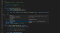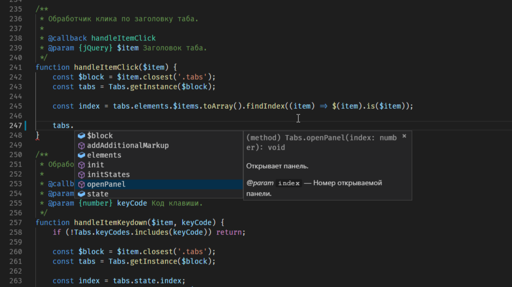
Вывод описания и параметров функции в списке автосаджеста после добавления аннотации JSDoc
Intellisense — это общий термин для обозначения автокомплита кода и вывода списка автосаджеста и хинтов при написании. Из коробки VSCode поддерживает фронтендерский стек языков, для остальных же можно поставить расширение с маркетплейса. Именно наличие Intellisense отличает редактор кода от текстового редактора — мы чувствуем, что пишем код, и редактор помогает нам в его написании. Для js Intellisense предоставляет список возможных для использования функций, классов, методов, полей и т.д. Для css предоставляет список подходящих свойств с кратким описанием. При написании разметки дублирует функционал Emmet. Для типовых JSON-файлов с определённым набором полей предоставляет список полей при постановке кавычек и возможные значения после двоеточия — особенно явно это видно с package.json и c файлом настроек settings.json.
По настройкам меня устраивает стандартная конфигурация. Единственное, что я поменял — это убрал вывод имён в автосаджест, т.е. обычных слов, которые забивают общий список:
“javascript.suggest.names”: false,
Стоит немного рассказать о том, как получить профит от Intellisense для написанного вами кода. До Typescript я ещё не добрался, так что пользуюсь JSDoc-аннотациями. VSCode вставляет аннотацию после ввода /** и нажатия Enter. Если речь идёт о функции, то VSCode попытается предположить наличие параметров и проставит табстопы по аналогии со сниппетами. От написания аннотаций для функций в принципе много профита — это и упрощает поддержку кода, и позволяет сгенерировать автоматическую документацию, но в отношении VSCode это кроме всего прочего даст нам хинты с описанием функции и её аргументов (типы и назначение). Например, мы документировали метод класса, позже создали объект класса, поставили “.” и смотрим список автосаджеста. В нём мы увидим список всех методов и полей, но вместе с тем у нашего метода будет описание и корректные типы аргументов и возвращаемого типа (если есть). С другой стороны, когда код уже написан, мы можем навестись на имя метода и понять, что он делает по высвеченному описанию.
Например, для метода открытия таба:
/**
* Открывает панель таба.
*
* @param {Number} index Номер открываемой панели.
*/
В результате мы увидим картину, показанную на скриншоте в начале этого раздела.
Также рекомендую для сложных структур прописывать определение типов через @typedef. Например, для объекта состояний тех же табов:
/**
* Состояние панели табов.
* @typedef {Object} TabsState
*
* @property {Number} index Индекс панели.
* @property {jQuery} $item Заголовок таба.
* @property {jQuery} $panel Панель таба.
* @property {String} itemId id заголовка таба.
* @property {String} panelId id панели таба.
*/
И в конструкторе описываем поле состояния, как соответствующее этому типу:
/**
* Cостояние активной панели табов.
* @type {TabsState}
*/
Благодаря такому определению, мы сразу можем увидеть из каких полей состоит объект состояния, который определяется позже на этапе инициализации.
После этого VSCode выдаст нам следующие подсказки:
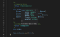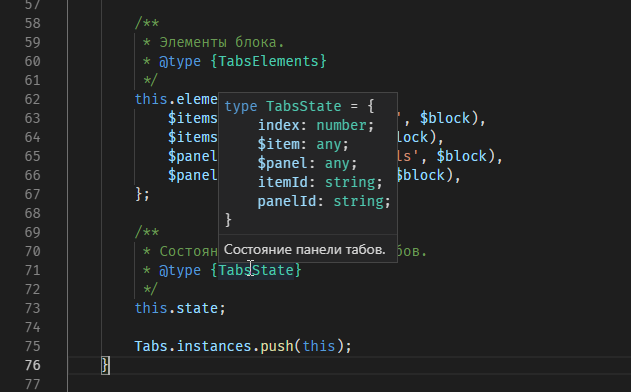
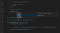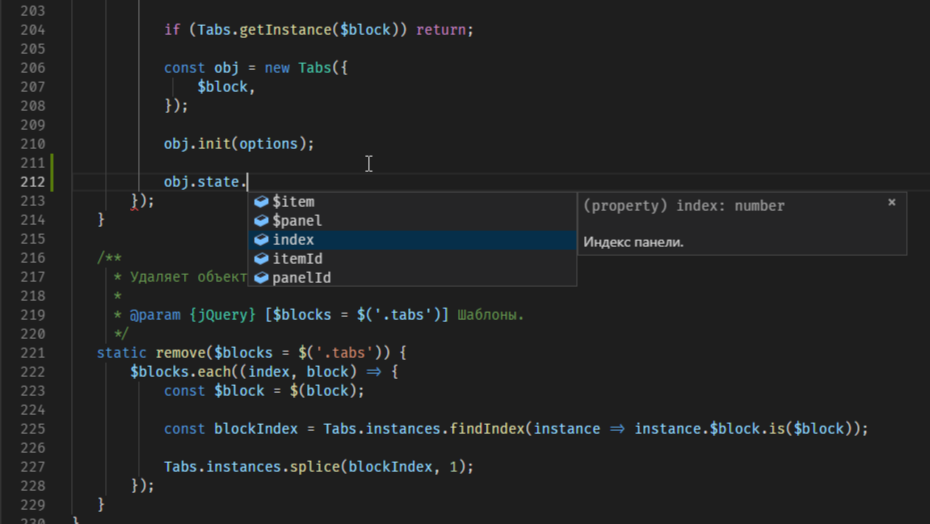
Определение typedef добавляет подсказки при наведении на определённый тип и при обращении к полю этого типа
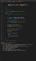
Визуальная идентификация ошибок линтера на уровне редактора
Что касается линтинга, то я сторонник подхода, при котором линтеры должны быть встроены проект, их конфиги должны быть утверждены и соответствовать единому кодстайлу. При таком подходе каждый работающий на проекте человек видит предупреждения линтера и работает с единым конфигом. То же самое касается и автоформатирования. Однако даже при таком подходе, когда линтер встроен в сборку, полезно иметь линтер на уровне редактора, т.к. в редакторе появляется подчёркивание некорректных фрагментов кода, а на вкладке Problems в нижней панели отображается список ошибок — это куда нагляднее, чем обычный вывод в консоль на уровне сборки. То есть иметь линтер на уровне сборки обязательно для всех на проекте, а интеграция в редактор, если подобная интеграция поддерживается, идёт как следующий уровень над линтером и упрощает работу, но уже по желанию. Таким образом, если у вас уже определены конфиги для линтеров на проекте, то вы просто передаёте эти же конфиги плагинам линтеров VSCode.
Собственно, что это за плагины? У себя я использую ESLint для js и Stylelint для css. Оба линтера настраиваются идентично. Сначала вам необходимо установить плагины из торговой площадки для VSCode: ESLint и Stylelint.
Чтобы плагины работали, нужно чтобы у вас кроме плагинов были установлены сами линтеры. Т.к. проект изначально построен с линтингом in mind, то линтеры уже установлены локально. Также могут быть установлены дополнительные плагины линтеров и кастомные парсеры. При этом имеются проверенные конфиги, заточенные под конкретный проект. В таком случае сразу после установки плагинов редактора линтеры и конфиги найдутся автоматически, и всё заработает.
Если линтера на проекте нет, то есть возможность активировать его у себя на уровне редактора. Для этого нужно поставить линтеры глобально, а конфиги можно, как вариант, определить прямо в редакторе на уровне Workspace Settings. Но я всё же не вижу в этом смысла. Весь проект начнёт гореть красным, в Problems 2K+ ошибок, и никто кроме вас этого не видит. Зачем? Так что линтеры на уровне редактора, ещё раз повторюсь, предпочтительно использовать как второй уровень над линтерами, встроенными в проект — апгрейд интерфейса, если угодно.
Если вы подключаете линтеры для валидации кода, то встроенную проверку нужно отключать, чтобы они не перекрывали друг друга, и не возникало конфликтов:
“javascript.validate.enable”: false,
“typescript.validate.enable”: false,
“css.validate”: false,
“less.validate”: false,
“scss.validate”: false,
Также в VSCode имеется возможность настроить форматирование. Я не использую Prettier, т.к. он слишком субъективен и не допускает гибкой настройки, а у меня имеется собственный взгляд на подобные вещи. autofix линтеров уже ближе, т.к. код видоизменяется строго в соответствии с вашими правилами, но, считаю, что он также должен быть на уровне проекта, а не редактора. Хотя для плагина ESLint имеется настройка, позволяющая его активировать, если угодно.
Кроме того VSCode имеет встроенную функцию форматирования. Его можно применять, когда скопировали страшный фрагмент кода со StackOverflow или CodePen и хотите понять, что там вообще происходит (не копируйте ничего так бездумно btw ☝️). Для этого можно выделить фрагмент и вызвать команду Format Selection или использовать шорткат:
Ctrl + K Ctrl + F — форматирование выделенного фрагмента.
Другой рядовой случай: нам попался минифицированный файл. Мы можем отформатировать его, чтобы в общих чертах что-то в нём понять. От общей обфускации форматирование нас не избавит, но хотя бы что-то. Для этого используем Format Document или шорткат:
Shift + Alt + F — форматирование всего документа.
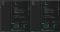
Процесс кооперативного написания кода с применением технологии Visual Studio Live Share.
Visual Studio Live Share — это разработка Microsoft, позволяющая расшаривать свой редактор для других людей. Это может быть полезно для популярной нынче методики парного программирования, совместного поиска решения проблемы, код ревью в реальном времени, презентаций.
Чтобы воспользоваться этими космическими технологиями в VSCode нужно установить себе расширение:
VS Live Share
Кроме расширения всё, что вам нужно — это всем участникам сессии иметь VSCode или Visual Studio и аккаунт на GitHub для авторизации в первый раз.
Для управления Live Share расширение предоставляет отдельную вкладку на панели управления, а также кнопки в нижнем баре. Здесь можно начать новую сессию в доступном на запись или readonly режиме или присоединиться к чужой сессии.
Информацию в нижнем баре советую отображать только при активации сессии. При выключенном шаринге она только забивает интерфейс, дублируя функционал, и так доступный из панели управления. После коннекта же эта информация имеет место быть ввиду своей наглядности, к тому же она визуально идентифицирует тот факт, что сессия запущена:
“liveshare.showInStatusBar”: “whileCollaborating”,
Чтобы протестировать работу Live Share, достаточно расшарить проект самому себе. Для этого начинаем новую сессию, входим через GitHub аккаунт, получаем ссылку на сессию и переходим по ссылке в браузере. Для шаринга с другими участниками делается то же самое — просто кидаете им ссылку, и они присоединяются, либо через браузер, либо через кнопку Join collaboration session внутри вкладки Live Share. При заходе через браузер редактор откроется автоматически.
После присоединения второй участник сможет ходить по вашему проекту и, если сессия не в readonly режиме, изменять код. Позиция участников отмечается маркером и переход к этой позиции всегда можно осуществить кликом по имени участника на вкладке Live Share. Также доступен режим следования за другим участником — для включения/отключения его предназначена кнопка пина в верхнем правом углу.
Кроме шаринга кода можно расшаривать терминал и сервер. Первое происходит автоматически в readonly режиме, но имеется возможность выдать права на редактирование. Второе полезно для демонстрации результата со своего localhost другому участнику — для этого просто жмём Share server, вводим порт и имя для отображения в списке. После этого ссылка на сервер появляется у участников и после перехода по ней у них на некотором порту (не том же, который расшаривается) появится ваш результат.
Все эти возможности можно по-разному применять в различных ситуациях. Для парного программирования открываете сессию с правами на изменение, связываетесь по голосовой связи и творите в коопе. На презентациях можно для всех желающих, пришедших с ноутбуками, запускать readonly сессию, включать режим следования, и участники смогут видеть демонстрируемый код прямо на экране своего монитора в любимом редакторе вместо того, чтобы вглядываться в неважную картинку проектора на другом конце зала. Шаринг сервера можно использовать для демонстрации незадеплоенных результатов работы, как альтернативу передаче ссылки на сервер в рамках общей сети.
Единственное, чего мне здесь не хватает — это внутреннего средства коммуникации. Microsoft не предоставляет встроенного решения для чата, и установить его можно только сторонними пакетами. Проблема в том, что я пробовал 2 варианта,и оба у меня не заработали. Так что будем ждать 😕
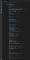
Отслеживание актуальности зависимостей через встроенные в package.json линзы расширением Version Lens
VSCode упрощает вашу работу с внешними зависимостями, предоставляя функционал Intellisense внутри package.json. Если вы решите добавить вручную новую зависимость, то сначала вам редактор предложит список зависимостей, а затем после выбора последнюю версию с различными флагами. Однако обычно эта возможность не нужна, т.к. зависимости ставятся через пакетный менеджер (yarn/npm), а package.json обновляется автоматически (при наличии флагов на сохранение, если нужны).
Но вот какая возможность объективно незаменима — это вывод информации по наведению на зависимость. По ховеру появляется окно с общим описанием, последней версией и ссылкой на репозиторий. Описание даёт общее представление о пакете, а по ссылке можно одним кликом перепрыгнуть к развернутому описанию и документации. Для контроля версий же есть более удобный интерфейс, который мы рассмотрим далее.
Version Lens
Расширение, которое позволяет держать ваши внешние зависимости актуальными. Активируется нажатием по кнопке Show Dependency Versions на верхней правой панели. После активации в ваш package.json встраиваются линзы, показывающие наличие версии зависимости новее вашей. Если она имеется, то можно нажать на новую версию, и она заменит вашу текущую. После этого запускаете yarn install (ну или npm) и обновляете зависимости.
Изначально отображается минифицированная версия линз. На той же панели имеется возможность дополнительно активировать вывод теггированных версий — например, alpha и beta релизов. А также вывести более броские цветные версии статусов зависимостей.
По умолчанию линзы активируются при запуске редактора. Я предпочёл отключить эту автоматическую активацию, т.к. они могут включаться только тогда, когда они нужны, через интерфейс по запросу:
“versionlens.showVersionLensesAtStartup”: false,
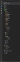
Внешний вид проводника с подключённой иконочной темой vscode-icons
По визуальной стилизации VSCode я выделю 3 основных способа персонализации: цветовая тема, иконочная тема и выбор шрифта.
Выбор тем для VSCode воистину огромен и каждый подберёт для себя что-то своё. В редакторе изначально есть набор предустановленных тем, из которых можно выбрать понравившуюся, но кроме того маркетплейс заполнен темами на любой вкус.
Быстрый просмотр тем можно осуществить через командную строку: Preferences: Color Theme или через кнопку настроек в нижнем левом углу. Вызов этой команды открывает список установленных тем, по которым можно пройтись через стрелки клавиатуры, сразу увидев их превью.
Лично я, потратив некоторое время на поиски, остался на стандартной теме Dark+. По мне так, идеальная тёмная тема, приятная глазу.
Иконочная тема меняет представление иконок файлов различных расширений, отображаемых в проводнике на панели управления и непосредственно на вкладках редактора.
Из коробки доступны 2 темы, из которых можно выбрать. Но здесь я советую поставить тему с маркетплейса vscode-icons.
vscode-icons
Это одна из самых популярных загрузок среди всех товаров торговой площадки в принципе (на данный момент ~10M скачиваний), и такая популярность оправдана. Порой кажется, что у этой темы есть своя иконка просто для всего, настолько их там много.
Также эту тему от дефолтных выгодно выделяет наличие иконок для директорий. Т.е. определены иконки для ряда типовых наименований директорий. Например, у меня на верхнем уровне это src, dist, public, config, node_modules. Внутри src идут scripts, styles, templates, images, fonts, ну и так далее. Кроме того у всех этих иконок есть вариации для открытой и закрытой папки, что ещё придаёт наглядности.
 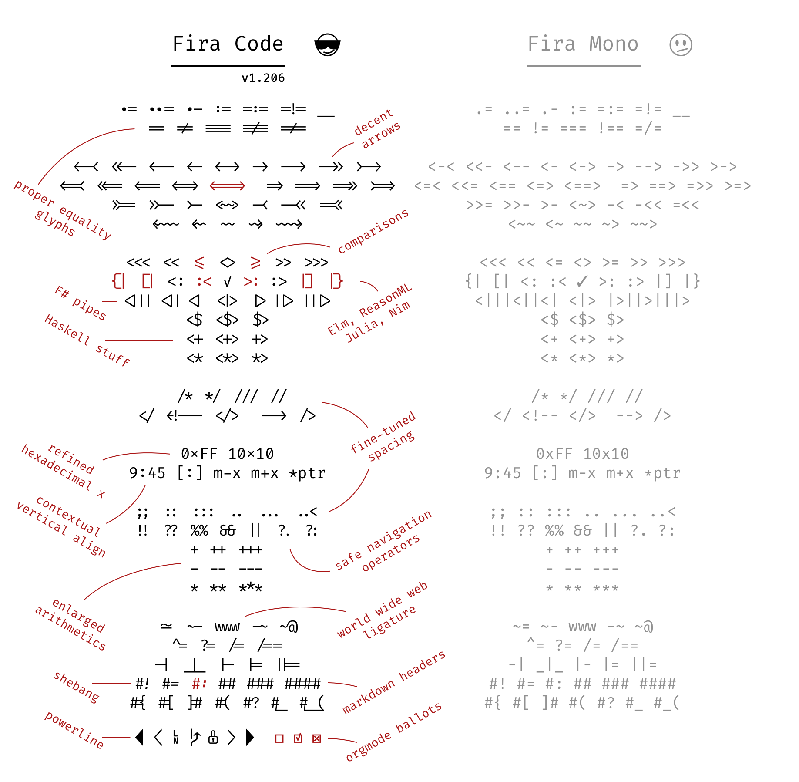
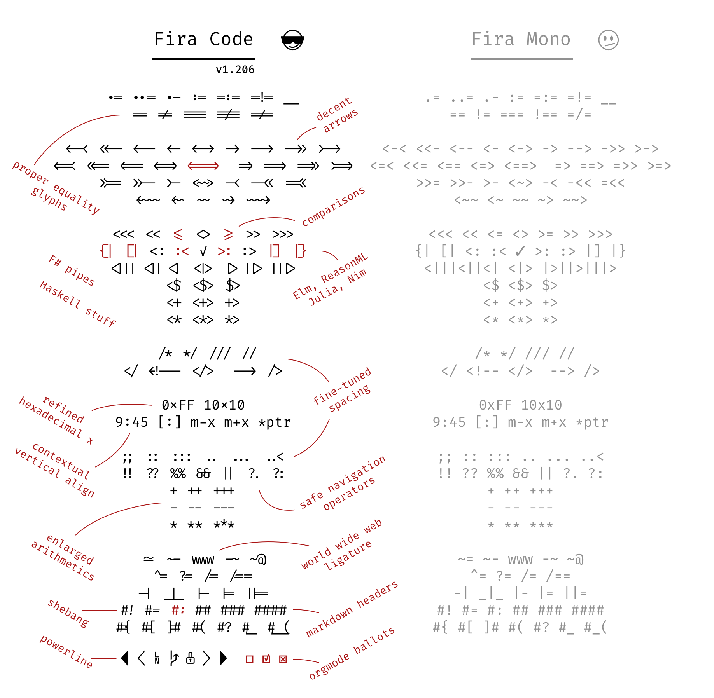
Демонстрация лигатур шрифта Fira Code
VSCode поддерживает шрифты с лигатурами, так что если хотите быть самыми модными, то советую загрузить себе шрифт Fira Code. Это очень популярный шрифт, который рекомендуют именно в связке с VSCode. Скачиваете себе шрифт из репозитория, устанавливаете на компьютер и прописываете в настройках редактора имя шрифта и поддержку лигатур:
“editor.fontFamily”: “Fira Code”,
“editor.fontLigatures”: true,
Лигатуры — это объединение нескольких последовательно идущих символов в единую конструкцию, которые напрямую не ввести с клавиатуры, но которые выглядят более человекопонятно. Наглядный пример — это знак неравенства, который в js записывается, как !=. Fira Code преобразует его в аккуратный символ перечёркнутого равенства. На приложенном скриншоте можно видеть список всех подобных преобразований.
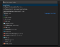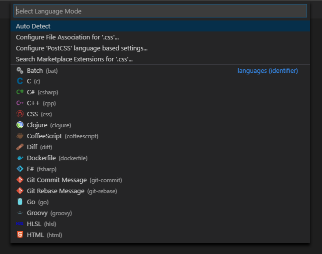
Меню настройки типа файла
Тип файлов определяется автоматически, но бывают случаи с экзотическими расширениями или поведением, когда нужно указать ассоциации напрямую. Если тип не удаётся определить, то файл будет расценен, как обычный текст, т.е. будет отсутствовать любого рода подсветка синтаксиса. Если тип определён неверно, то подсветка будет, но неточная, и консоль заполнится предупреждениями о некорректном синтаксисе.
Текущий тип файла указывается справа в статус баре. Нажатие по нему открывает меню с управлением ассоциациями. Здесь можно указать напрямую с каким типом файлов ассоциировать текущее расширение.
В целом, я выделю 2 случая, когда это нужно. Первое — это JSON-конфиги со специфическим расширением, и второе — это PostCSS.
В первом случае, ряд инструментов имеет рекомендации по описанию конфигов в файлах специфических расширений. В моём случае это конфиги PostCSS и StyleLint — для них vscode-icons корректно определяет иконку, но контент определяется, как Plain Text.
Во втором случае, я использую PostCSS для файлов с расширением .css, т.к. PostCSS — это постпроцессор, который обрабатывает обычные css-файлы. Однако встроенная поддержка PostCSS в VSCode отсутствует. Чтобы её добавить, нужно поставить плагин с поддержкой синтаксиса.
postcss-sugarss-language
Расширение, которое добавляет поддержку PostCSS-синтаксиса. Т.к. я работаю с PostCSS, то мне нужно, чтобы редактор не расценивал за синтаксические ошибки, например, вложенные селекторы в *.css файлах. Проблема поддержки PostCSS, из-за которой она не встроена по умолчанию — это его непостоянство в плане единого стиля. Т.е. мы работаем с обычным CSS и плагинами расширяем его под себя. Можно ставить ассоциацию *.css файлов (или *.pcss, если угодно) с SCSS, и синтаксис будет воспринят примерно корректно, но не совсем. Например, комментарии на Ctrl + / будут не того формата (строчные вместо блочных). Существует целый ряд малопопулярных плагинов, которые нацелены решить эту проблему — этот из них реально работает.
Т.о. настройки выглядят следующим образом:
“files.associations”: {
“*.css”: “postcss”,
“.postcssrc”: “json”,
“.stylelintrc”: “json”
},
В разделе по линтингу я писал, что нужно отключать встроенную валидацию. Этот плагин добавляет новый тип postcss, так что для него также нужно прописать false:
Ну и наконец, опишу ряд расширений, которые не попали в предыдущие разделы, но которые также помогают мне в работе.
Colorize
Этот плагин меняет выделение цветов с представления с боксом превью на представление с задним фоном этого цвета. Но это не его основная суть, главная киллер фича здесь в том, что он поддерживает переменные, при этом сам находит их в рамках проекта и добавляет корректное цветовыделение в местах их использования. Это просто космические технологии, т.к. я пытался добиться этого во всех редакторах до этого (Sublime Text, Brackets, Atom) и ни одно расширение мне не позволило этого сделать. Теперь же, к примеру, у нас есть файл customMedia.css или variables.pcss, в котором определяются все переменные таблиц стилей, среди них определяются и переменные цветов. В этом файле мы наглядно видим палитру проекта, но и, перейдя в любой другой файл со стилями, где эти переменные используются, мы видим какой цвет стоит за этой переменной — это добавляет +100 баллов к наглядности и выигрывает нам время засчёт избавления от необходимости каждый раз лезть в файл с переменными и смотреть на какой цвет она ссылается. Теперь этот процесс требуется только при выборе из 50 оттенков серого, когда нужно посмотреть код цвета. К сожалению, превью значения при наведении не показывается, но это уже так-то и некасающийся цветов функционал.
Для CSS-переменных вроде var( — cl-black) такая возможность работает из коробки, а для SCSS-подобного синтаксиса $cl-black и всех остальных нужно дописать их тип в массив поддерживаемых форматов переменных:
“colorize.colorized_variables”: [
“CSS”,
“SASS”
],
Также по настройкам я убрал скрытие цвета текущей строки. Мне такое поведение кажется избыточным и только отвлекает:
“colorize.hide_current_line_decorations”: false,
И остаётся проблема, что мы перешли на новый формат выделения цвета, но стандартный при этом остался, так что надо его отключить:
“editor.colorDecorators”: false,
К сожалению, эта настройка не убирает боксы превью из файлов, ассоциированных с PostCSS, а только CSS, SASS и LESS. Так что в моём случае она не помогает, но я держу её включённой, надеясь, что когда-нибудь она заработает 😩
Code Runner
Порой бывает нужно протестировать работоспособность отдельного фрагмента кода — точно ли он делает то, что нужно. Для этого приходится комментировать весь ненужный код, оставляя только этот фрагмент, что довольно-таки геморно. Или другой случай — хочется показать коллегам какую-нибудь киллер фичу из лучшего языка на свете. Работая во фронтенд-среде, чтобы это сделать, пришлось бы как минимум создать index.html с тегом script. Другой вариант — воспользоваться внешним ресурсом для написания кода вроде Codepen или воспользоваться консолью в инструментах разработчика. Это проще первого варианта, но такой подход заставляет покинуть комфортный с любовью настроенный редактор, что, во-первых, долго, и, во-вторых, неудобно. Особенно неудобно для многострочных конструкций в консоли. Написал const — не получил в итоге желаемого результата, написал ещё раз — словил ошибку из-за переопределения.
Ну и собственно Code Runner решает такую проблему, помогая запускать отдельные фрагменты кода, и предоставляя результаты исполнения (ваши console.log) во вкладке Output нижней панели. Чтобы выполнить отдельный фрагмент, просто выделите его мышью и нажмите Ctrl + Alt + N. То же самое можно сделать через контекстное меню на ПКМ или кнопку Run Code в верхней правой части редактора.
Чтобы была возможность запустить фрагмент кода не только из файлов с этим расширением, нужно прописать дефолтный язык. В моём случае это javascript:
“code-runner.defaultLanguage”: “javascript”,
Теперь я могу писать .md или .txt файл, захотеть протестить какую-то фичу и написать её прямо в теле документа. Иначе пришлось бы создавать .js файл и тогда уж проще зайти в браузер и воспользоваться консолью из инструментов разработчика, хоть это и не так удобно.
Regex Previewer
Расширение позволяет быстро тестировать регулярные выражения, предоставляя файл с тестовым текстом справа. При открытом превью можно навестись на любой регексп, и справа подсветятся все совпадения. Это очень удобно, в особенности если у вас есть глобальный файл с регулярными выражениями, определяемыми на уровне проекта. Без расширения приходилось бы для тестирования покидать редактор и переходить на внешние сервисы вроде regexr.com. В целом, это всё равно более функциональный сервис, который предоставляет более широкий спектр возможностей, но конкретно для тестирования вы сможете обходиться возможностями встроенными прямо в редактор, что однозначно быстрее за счёт отсутствия необходимости переключения контекста. Можно в нижней панели включать флаги gm, чтобы совпадения выводились для регулярных выражений без этих флагов (выводились все совпадения в многострочном тексте). Code Lens советую отключать и выводить превью через палитру команд, т.к. работает автоопределение нестабильно и может выводить “Test regex” в строчках со слешами, где это не нужно. Например, в комментарии, внутри которого есть слеш.
SVG Viewer
Расширение предоставляет возможность просматривать превью svg-файла прямо в редакторе. Иначе приходилось бы переходить в проводник и открывать файл, например, через браузер. Имеется возможность включить auto preview, после чего при открытии svg справа будет открываться превью. Однако я этого делать не советую, т.к. просматривая файлы один за другим, у вас скопится куча открытых превью, т.к. они не заменяются автоматически, как остальные файлы при просмотре без редактирования. Да и в целом на практике это не так удобно, как звучит.
Auto Rename Tag
Крохотный плагин, который предоставляет возможность, которая обычно встроена в редактор, но в VSCode по какой-то причине отсутствует — при редактировании открывающего тега параллельно редактируется и закрывающий и наоборот. Может со временем эта возможность станет встроенной, и необходимость в плагине отпадёт, благо в репозитории VSCode на данный момент числится открытый issue на эту тему.
?? 🔥 🔥 Фух… На этом, пожалуй, у меня всё. В рамках этой статьи я описал все функции, которые использую на данный момент. Понятно, что большая часть сказанного здесь крайне субъективна, но она нарочито сделана такой персонифицированной. Полученную информацию можно пропустить через себя, профильтровать и пересмотреть свои подходы к использованию редактора. Надеюсь, что вы узнали для себя что-то новое и примените полученные знания на практике.
Если вам есть, что сказать, то оставляйте комментарии. Любой фидбек — это приятно 😌